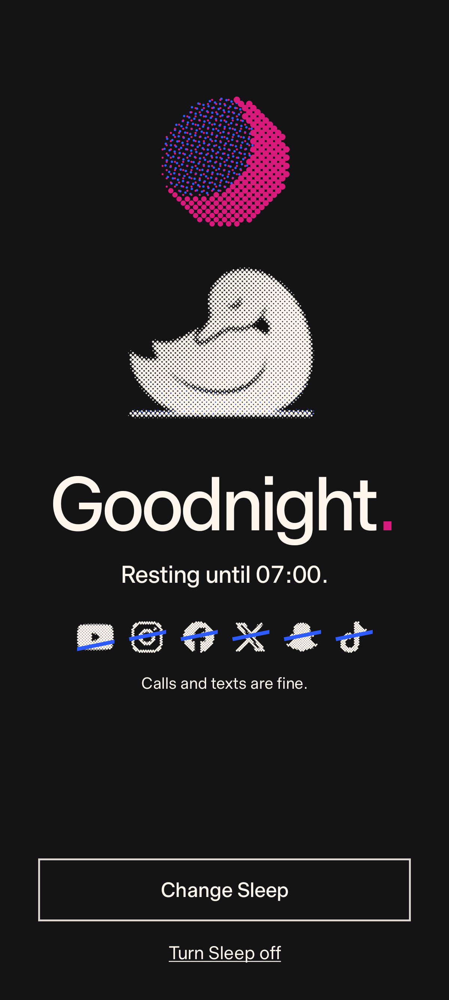

<!doctype html>
<html lang="en">
<head>
<meta charset="utf-8">
<title>Idyll, filmed</title>
<link rel="stylesheet" href="../../fonts.css">
<style>
/* The Idyll ad made from the phone's own screen recordings. ?fmt=story (1080 x 1920) | square (1080 x 1080),
   &f=<base url of the frame folders cut by tools/real-cuts.sh from the privacy-blurred recordings>.
   Deterministic: window.seek(t) draws the frame at t seconds (and waits for the footage to decode); window.DURATION is the length.
   The same system as showcase.html: one frame, one easing (cubic-bezier(.2,.8,.2,1)), durations from 150, 300, 600 and 1200 ms. */
:root { --paper: #f6f5f1; --ink: #141416; --pink: #d81b7a; --blue: #2d5bff; --cream: #fff6ee; --night: #141416;
  --sans: "Timeless Sans", "Helvetica Neue", Arial, sans-serif; }
* { box-sizing: border-box; }
html, body { margin: 0; width: 1080px; overflow: hidden; background: var(--night); -webkit-font-smoothing: antialiased; }
h1, p { margin: 0; }
#stage { position: relative; width: 1080px; overflow: hidden; }
.scene { position: absolute; inset: 0; overflow: hidden; display: none; }
.scene > .in { position: absolute; inset: 0; will-change: transform; }
.magenta { background: var(--pink); color: var(--cream); }
.blue { background: var(--blue); color: var(--cream); }
.night { background: var(--night); color: var(--cream); }
.paper { background: var(--paper); color: var(--ink); }
.pk { color: var(--pink); font-weight: inherit; } .ik { color: var(--ink); font-weight: inherit; } .bk { color: var(--blue); font-weight: inherit; }
.crop { --c: var(--cream); --l: 22px; position: absolute; inset: 40px; pointer-events: none; z-index: 30;
  background:
    linear-gradient(var(--c), var(--c)) 0 0 / var(--l) 2px no-repeat, linear-gradient(var(--c), var(--c)) 0 0 / 2px var(--l) no-repeat,
    linear-gradient(var(--c), var(--c)) 100% 0 / var(--l) 2px no-repeat, linear-gradient(var(--c), var(--c)) 100% 0 / 2px var(--l) no-repeat,
    linear-gradient(var(--c), var(--c)) 0 100% / var(--l) 2px no-repeat, linear-gradient(var(--c), var(--c)) 0 100% / 2px var(--l) no-repeat,
    linear-gradient(var(--c), var(--c)) 100% 100% / var(--l) 2px no-repeat, linear-gradient(var(--c), var(--c)) 100% 100% / 2px var(--l) no-repeat; }
.paper .crop { --c: var(--ink); }
.night .crop { --c: #6f6b68; }
canvas { display: block; position: absolute; }
.cap { position: absolute; left: 80px; right: 80px; text-align: center; font: 500 112px/.94 var(--sans); letter-spacing: -.052em; z-index: 20; will-change: opacity, transform; }
.cap.l { text-align: left; }
.cap.big { font-size: 200px; line-height: .88; letter-spacing: -.062em; }
.cap.s { font: 400 50px/1.25 var(--sans); letter-spacing: -.012em; }
.blue .cap { text-shadow: 3px 2px 0 rgba(216,27,122,.45); }
.magenta .cap { text-shadow: 3px 2px 0 rgba(45,91,255,.4); }
.night .cap { text-shadow: 3px 2px 0 rgba(216,27,122,.4); }
.paper .cap { text-shadow: 3px 2px 0 rgba(45,91,255,.22); }
.cap.s { text-shadow: none !important; }
.scr { position: absolute; overflow: hidden; background: #000; will-change: transform, opacity; z-index: 12; }
.scr > img.ft { position: absolute; left: 0; top: 0; width: 100%; display: block; }
.ph { position: absolute; inset: 0; display: grid; place-items: center; text-align: center; font: 400 22px/1.4 var(--sans); color: #8a8690; background: repeating-linear-gradient(135deg, #1d1c21 0 14px, #18171b 14px 28px); }
.grain { position: absolute; inset: 0; pointer-events: none; z-index: 40; opacity: .26; mix-blend-mode: multiply;
  background-image: url("data:image/svg+xml,%3Csvg xmlns='http://www.w3.org/2000/svg' width='240' height='240'%3E%3Cfilter id='n'%3E%3CfeTurbulence type='fractalNoise' baseFrequency='.9' numOctaves='2' stitchTiles='stitch'/%3E%3CfeColorMatrix values='0 0 0 0 .45 0 0 0 0 .05 0 0 0 0 .25 0 0 0 .9 -.42'/%3E%3C/filter%3E%3Crect width='100%25' height='100%25' filter='url(%23n)'/%3E%3C/svg%3E"); }
.night .grain { mix-blend-mode: screen; opacity: .05; }
.paper .grain { opacity: .14; }
.tap { position: absolute; border-radius: 50%; z-index: 9; pointer-events: none; opacity: 0; }
.wash { position: absolute; inset: 0; background: var(--blue); z-index: 0; clip-path: circle(0 at 50% 50%); }
</style>
</head>
<body>
<div id="stage"></div>
<script>
(async () => {
  const q = new URLSearchParams(location.search);
  const SQ = q.get('fmt') === 'square', FOOT = q.get('f') || '';
  const W = 1080, H = SQ ? 1080 : 1920;
  const stage = document.getElementById('stage');
  document.body.style.height = stage.style.height = H + 'px';
  const clamp = v => v < 0 ? 0 : v > 1 ? 1 : v;
  const out3 = t => 1 - Math.pow(1 - clamp(t), 3);
  const io = t => { t = clamp(t); return t < .5 ? 4 * t * t * t : 1 - Math.pow(-2 * t + 2, 3) / 2; };
  const sine = t => .5 - .5 * Math.cos(Math.PI * clamp(t));
  const C = { pink: '#d81b7a', blue: '#2d5bff', cream: '#fff6ee', ink: '#141416' };
  const mk = (parent, html) => { const d = document.createElement('div'); d.innerHTML = html.trim(); const e = d.firstElementChild; parent.appendChild(e); return e; };
  /* cubic-bezier(.2,.8,.2,1), solved for x: every motion uses it. */
  const bez = (() => { const x1 = .2, y1 = .8, x2 = .2, y2 = 1;
    const cx = 3 * x1, bx = 3 * (x2 - x1) - cx, ax = 1 - cx - bx, cy = 3 * y1, by = 3 * (y2 - y1) - cy, ay = 1 - cy - by;
    const X = s => ((ax * s + bx) * s + cx) * s, Y = s => ((ay * s + by) * s + cy) * s, dX = s => (3 * ax * s + 2 * bx) * s + cx;
    return t => { t = clamp(t); if (t === 0 || t === 1) return t; let s = t; for (let i = 0; i < 8; i++) { const d = dX(s); if (Math.abs(d) < 1e-6) break; s -= (X(s) - t) / d; } return Y(clamp(s)); }; })();
  const D = { xs: .15, s: .3, m: .6, l: 1.2 };

  /* Scenes push in from below (600 ms): the new plate is revealed bottom up while the old one rides up and away. A fade scene dissolves in instead. */
  const scenes = [];
  const scene = (cls, at, fade = 0) => {
    const s = mk(stage, `<section class="scene ${cls}"><div class="in"></div><div class="crop"></div><div class="grain"></div></section>`);
    const o = { s, in: s.firstElementChild, at, fade }; scenes.push(o); return o;
  };
  function drawScenes(t) {
    scenes.forEach((o, i) => {
      const next = scenes[i + 1];
      const vis = t >= o.at && (!next || t < next.at + (next.fade || D.s));
      o.s.style.display = vis ? 'block' : 'none'; o.vis = vis;
      if (!vis) return;
      if (o.fade) { o.s.style.opacity = io((t - o.at) / o.fade).toFixed(3); o.s.style.clipPath = 'none'; o.in.style.transform = 'none'; return; }
      const k = i === 0 ? 1 : Math.min(1, 1.004 * bez((t - o.at) / D.s)); /* lands exactly, no hairline of the old plate */
      o.s.style.clipPath = k < 1 ? `inset(${((1 - k) * 100).toFixed(3)}% 0 0 0)` : 'none';
      const away = 0; /* the old plate stays still under the new one: nothing of its phone pokes out at the top */
      o.in.style.transform = `translateY(${((1 - k) * 60 - away).toFixed(2)}px)`; /* a short lift: the phone never leaves the frame */
    });
  }

  /* The frame: the whole phone at the recording's own proportions (1200 x 2670), one size and place in every scene. */
  const FR = SQ ? { x: 586, y: 102, w: 394, h: 877, r: 28, sh: 11 } : { x: 224, y: 448, w: 632, h: 1406, r: 46, sh: 16 };
  const K = FR.w / 1200; /* frame px per recording px */
  const U = FR.w / 360;
  /* Captions: 84/88 in a story, centred, bottoms on y 410 above the phone; 68/72 in a square, left column, bottoms on y 560. */
  const tcap = (S, html) => mk(S.in, SQ
    ? `<h1 class="cap l" style="left:96px;right:auto;width:450px;top:auto;bottom:${H - 560}px;font-size:68px;line-height:72px;letter-spacing:-.045em">${html}</h1>`
    : `<h1 class="cap" style="left:96px;right:96px;top:auto;bottom:${H - 410}px;font-size:84px;line-height:88px;letter-spacing:-.045em">${html}</h1>`);
  const tland = (el, t, at) => { const k = at <= 0 && t < D.m ? 1 : bez((t - at) / D.m); el.style.opacity = k.toFixed(3); el.style.transform = `translateY(${((1 - k) * 24).toFixed(2)}px)`; };
  const tswapIn = (el, t, at) => { const k = bez((t - at) / D.xs); el.style.opacity = k.toFixed(3); el.style.transform = `translateY(${((1 - k) * 16).toFixed(2)}px)`; };
  const tleave = (el, t, at) => { if (t > at) el.style.opacity = Math.min(+el.style.opacity, 1 - bez((t - at) / D.xs)).toFixed(3); };
  /* A caption run: lines[i] shows from times[i]; the first lands (600 ms), each next one waits for the old to leave (150 ms) then lands (300 ms). */
  const capRun = (S, lines) => {
    const els = lines.map(([html]) => tcap(S, html));
    return t => els.forEach((el, i) => {
      const at = lines[i][1], nx = lines[i + 1] && lines[i + 1][1];
      if (i === 0) tland(el, t, at); else tswapIn(el, t, at);
      if (nx !== undefined) tleave(el, t, nx); /* the next line lands as this one leaves: never a frame without words */
    });
  };

  /* A clean status bar over the recorded one (its notification icons are painted out when the frames are cut):
     36 dp, the recording's own clock, wifi and battery, in cream over the app's colour. */
  const SB = 120 * K;
  const statusBar = (el, time) => mk(el, `<div style="position:absolute;left:0;right:0;top:0;height:${SB}px;z-index:8;color:#fff6ee">
      <span style="position:absolute;left:${24 * U}px;top:${(SB - 15 * U) / 2 + 1}px;font:500 ${13.5 * U}px/${15 * U}px var(--sans);letter-spacing:.01em">${time}</span>
      <svg viewBox="0 0 24 24" style="position:absolute;top:${(SB - 14 * U) / 2}px;right:${46 * U}px;width:${14 * U}px;height:${14 * U}px"><path d="M12 20 1.2 7.8A15.7 15.7 0 0 1 22.8 7.8z" fill="currentColor"/></svg>
      <span style="position:absolute;right:${22 * U}px;top:${(SB - 11 * U) / 2}px;width:${18 * U}px;height:${11 * U}px;border-radius:${3 * U}px;border:${1.4 * U}px solid currentColor;box-sizing:border-box;padding:${1.4 * U}px"><i style="display:block;height:100%;width:52%;border-radius:${1 * U}px;background:currentColor"></i></span></div>`);

  /* One phone per scene: the footage as an  stepped frame by frame, the status bar, an edge, a touch layer. */
  const pending = [];
  const phone = (S, cut, frames, time, dark) => {
    const el = mk(S.in, `<div class="scr" style="left:${FR.x}px;top:${FR.y}px;width:${FR.w}px;height:${FR.h}px;border-radius:${FR.r}px;box-shadow:${FR.sh}px ${FR.sh}px 0 ${dark ? '#000' : 'var(--ink)'}"></div>`);
    const ph = mk(el, `<div class="ph"></div>`);
    const img = mk(el, ``);
    const bar = statusBar(el, time);
    mk(el, `<i style="position:absolute;inset:0;border-radius:inherit;box-shadow:inset 0 0 0 2px ${dark ? '#4a4850' : 'rgba(20,20,22,.16)'},inset 0 0 0 3px rgba(255,246,238,.10);z-index:12;pointer-events:none"></i>`); /* a hairline rim: dark screens keep the phone's outline against the ink shadow */
    let cur = '';
    const sh = { el, w: FR.w, h: FR.h, S, bar, img };
    /* src(t) maps the ad's time to the recording's; the frame shown is the nearest 30 fps frame of the cut. */
    sh.show = s => {
      const i = Math.max(0, Math.min(frames.n - 1, Math.round((s - frames.a) * 30)));
      const url = `${FOOT}${cut}/f${String(i + 1).padStart(4, '0')}.jpg`;
      if (!FOOT) { ph.textContent = `${cut} ${s.toFixed(2)} s`; img.style.display = 'none'; return; }
      if (url !== cur) { cur = url; img.src = url; pending.push(img.decode().catch(() => { img.style.display = 'none'; ph.textContent = `${cut} missing`; })); }
    };
    /* Every frame drifts by 4 px over 5 s, so a still never sits dead; no zoom, ever. */
    sh.drift = (t, at) => { el.style.transform = `translateY(${(4 - 8 * sine((t - at) / 5)).toFixed(2)}px)`; };
    return sh;
  };
  /* A touch, drawn because recordings show none: a dot holds for the press (150 ms) and fades (300 ms) as a ring spreads (300 ms).
     x, y in recording px. */
  const touch = (sh, light = true) => {
    const c = light ? '255,246,238' : '20,20,22', R = 30 * FR.w / 545;
    const dot = mk(sh.el, `<i class="tap" style="background:rgba(${c},${light ? .26 : .2});border:${2 * FR.w / 545}px solid rgba(${c},.85)"></i>`), rip = mk(sh.el, `<i class="tap" style="border:${2.4 * FR.w / 545}px solid rgba(${c},.6)"></i>`);
    return (t, at, x, y) => {
      x *= K; y *= K;
      const p = (t - at) / D.s, qq = t - at;
      const dOp = qq < -.08 ? 0 : qq < 0 ? (qq + .08) / .08 : qq < D.xs ? 1 : 1 - bez((qq - D.xs) / D.xs); /* gone 300 ms after the tap, before the result settles */
      dot.style.cssText += `;left:${x - R}px;top:${y - R}px;width:${2 * R}px;height:${2 * R}px;opacity:${dOp.toFixed(3)}`;
      const r1 = R * (1 + 1.6 * bez(p));
      rip.style.cssText += `;left:${x - r1}px;top:${y - r1}px;width:${2 * r1}px;height:${2 * r1}px;opacity:${p > 0 && p < 1 ? (1 - bez(p)).toFixed(3) : 0}`;
    };
  };
  /* A swipe up from the bottom edge: the finger's dot travels up and fades. */
  const swipe = (sh) => {
    const R = 30 * FR.w / 545, dot = mk(sh.el, `<i class="tap" style="background:rgba(255,246,238,.5)"></i>`);
    return (t, at, dur, x, y0, y1) => {
      const k = (t - at) / dur, y = (y0 + (y1 - y0) * bez(k)) * K;
      dot.style.cssText += `;left:${x * K - R}px;top:${y - R}px;width:${2 * R}px;height:${2 * R}px;opacity:${k < 0 || k > 1.4 ? 0 : k < .1 ? k * 10 * .9 : (k < 1 ? .9 : .9 * (1 - (k - 1) / .4)).toFixed(3)}`;
    };
  };


  /* A clean Pixel-style home screen (from showcase.html), drawn because his own launcher shows his apps: the tour's launcher
     at 360 x 780 dp with the recording's clock and date. pixel(sh, target, clock)(t, at, arrive): tap the tile at `at`, the app
     opens with a zoom from the icon (500 ms) to a plain splash, and the recording shows from `arrive` (280 ms, as Idyll's screens arrive). */
  const PIX = { instagram: ['radial-gradient(circle at 30% 107%,#fdf497 0%,#fdf497 5%,#fd5949 45%,#d6249f 60%,#285aeb 90%)', '#fff'], youtube: ['#fff', '#ff0033'], tiktok: ['#010101', '#fff'], x: ['#000', '#fff'],
    reddit: ['#ff4500', '#fff'], snapchat: ['#fffc00', '#111'], facebook: ['#0866ff', '#fff'], linkedin: ['#0a66c2', '#fff'], threads: ['#000', '#fff'], discord: ['#5865f2', '#fff'], substack: ['#ff6719', '#fff'] };
  const SNAP = 'M12.206.793c.99 0 4.347.276 5.93 3.821.529 1.193.403 3.219.299 4.847l-.003.06c-.012.18-.022.345-.03.51.075.045.203.09.401.09.3-.016.659-.12 1.033-.301.165-.088.344-.104.464-.104.182 0 .359.029.509.09.45.149.734.479.734.838.015.449-.39.839-1.213 1.168-.089.029-.209.075-.344.119-.45.135-1.139.36-1.333.81-.09.224-.061.524.12.868l.015.015c.06.136 1.526 3.475 4.791 4.014.255.044.435.27.42.509 0 .075-.015.149-.045.225-.24.569-1.273.988-3.146 1.271-.059.091-.12.375-.164.57-.029.179-.074.36-.134.553-.076.271-.27.405-.555.405h-.03c-.135 0-.313-.031-.538-.074-.36-.075-.765-.135-1.273-.135-.3 0-.599.015-.913.074-.6.104-1.123.464-1.723.884-.853.599-1.826 1.288-3.294 1.288-.06 0-.119-.015-.18-.015h-.149c-1.468 0-2.427-.675-3.279-1.288-.599-.42-1.107-.779-1.707-.884-.314-.045-.629-.074-.928-.074-.54 0-.958.089-1.272.149-.211.043-.391.074-.54.074-.374 0-.523-.224-.583-.42-.061-.192-.09-.389-.135-.567-.046-.181-.105-.494-.166-.57-1.918-.222-2.95-.642-3.189-1.226-.031-.063-.052-.15-.055-.225-.015-.243.165-.465.42-.509 3.264-.54 4.73-3.879 4.791-4.02l.016-.029c.18-.345.224-.645.119-.869-.195-.434-.884-.658-1.332-.809-.121-.029-.24-.074-.346-.119-1.107-.435-1.257-.93-1.197-1.273.09-.479.674-.793 1.168-.793.146 0 .27.029.383.074.42.194.789.3 1.104.3.234 0 .384-.06.465-.105l-.046-.569c-.098-1.626-.225-3.651.307-4.837C7.392 1.077 10.739.807 11.727.807l.419-.015h.06z';
  function pixel(sh, target, clock, left = true) {
    const u = U, ic = 52 * u;
    const NM = { instagram: 'Instagram', youtube: 'YouTube', tiktok: 'TikTok', x: 'X', reddit: 'Reddit', snapchat: 'Snapchat', facebook: 'Facebook', linkedin: 'LinkedIn', threads: 'Threads', discord: 'Discord', substack: 'Substack', idyll: 'Idyll' };
    const mask = (n, size, col, extra = '') => `<i style="position:absolute;inset:0;-webkit-mask:url(../../img/brands/${n}.svg) center/${size}% no-repeat;mask:url(../../img/brands/${n}.svg) center/${size}% no-repeat;background:${col};${extra}"></i>`;
    const gl = n => {
      if (n === 'idyll') return ``;
      if (n === 'snapchat') return `<svg viewBox="-1.5 -1.5 27 27" style="position:absolute;left:19%;top:19%;width:62%;height:62%"><path d="${SNAP}" fill="#fff" stroke="#111" stroke-width="1.35" stroke-linejoin="round"/></svg>`;
      if (n === 'facebook') return mask(n, 100, '#0866ff');
      if (n === 'linkedin') return `<i style="position:absolute;left:22%;top:22%;width:56%;height:56%;border-radius:18%;background:#fff;-webkit-mask:url(../../img/brands/linkedin.svg) center/100% no-repeat,linear-gradient(#000,#000);-webkit-mask-composite:xor;mask:url(../../img/brands/linkedin.svg) center/100% no-repeat exclude,linear-gradient(#000,#000)"></i>`;
      if (n === 'tiktok') return mask(n, 50, '#25f4ee', `transform:translate(${-.9 * u}px,${-.9 * u}px)`) + mask(n, 50, '#fe2c55', `transform:translate(${.9 * u}px,${.9 * u}px)`) + mask(n, 50, '#fff');
      return mask(n, 50, PIX[n][1]);
    };
    const tile = n => `<div data-n="${n}" style="display:grid;justify-items:center;row-gap:${6 * u}px"><div class="pt" style="position:relative;width:${ic}px;height:${ic}px;border-radius:50%;overflow:hidden;background:${n === 'idyll' ? 'transparent' : n === 'facebook' ? '#fff' : PIX[n][0]};box-shadow:0 ${1 * u}px ${2.5 * u}px rgba(20,20,22,.16)">${gl(n)}</div><span style="font:400 ${12 * u}px/1 var(--sans);letter-spacing:.01em;color:#1d1b20">${NM[n]}</span></div>`;
    const row = (list, top) => `<div style="position:absolute;left:${16 * u}px;right:${16 * u}px;top:${top * u}px;display:grid;grid-template-columns:repeat(4,1fr)">${list.map(tile).join('')}</div>`;
    const el = mk(sh.el, `<div class="lau" style="position:absolute;inset:0;z-index:4;overflow:hidden;border-radius:inherit;background:linear-gradient(168deg,#f7ebe9 0%,#efe7f3 46%,#e3e9fb 100%);font-family:var(--sans)">
      <div class="pw" style="position:absolute;inset:0;transform-origin:50% 50%">
        <p style="position:absolute;left:${left ? 22 * u : 0}px;right:${left ? 'auto' : 0};top:${(left ? 52 : 100) * u}px;margin:0;text-align:${left ? 'left' : 'center'};font:300 ${(left ? 50 : 72) * u}px/1 var(--sans);letter-spacing:-.04em;color:#1d1b20">${clock}</p>
        <p style="position:absolute;left:${left ? 24 * u : 0}px;right:${left ? 'auto' : 0};top:${(left ? 110 : 182) * u}px;margin:0;text-align:${left ? 'left' : 'center'};font:400 ${15 * u}px/1.2 var(--sans);color:#49454f">${left ? 'Tue, 13 Oct' : 'Tuesday 13 October'}</p>
        ${row(['instagram', 'youtube', 'tiktok', 'x'], 440)}
        ${row(['reddit', 'snapchat', 'facebook', 'linkedin'], 528)}
        ${row(['threads', 'discord', 'substack', 'idyll'], 616)}
        <div style="position:absolute;left:${16 * u}px;right:${16 * u}px;top:${724 * u}px;height:${52 * u}px;border-radius:${26 * u}px;background:rgba(255,255,255,.82)">
          <svg viewBox="0 0 24 24" style="position:absolute;left:${18 * u}px;top:${14 * u}px;width:${24 * u}px;height:${24 * u}px"><circle cx="10.5" cy="10.5" r="6" fill="none" stroke="#49454f" stroke-width="2"/><path d="m15 15 5 5" stroke="#49454f" stroke-width="2" stroke-linecap="round"/></svg>
          <svg viewBox="0 0 24 24" style="position:absolute;right:${18 * u}px;top:${14 * u}px;width:${24 * u}px;height:${24 * u}px"><rect x="9" y="3" width="6" height="11" rx="3" fill="#49454f"/><path d="M6 11a6 6 0 0 0 12 0M12 17v4" stroke="#49454f" stroke-width="2" fill="none" stroke-linecap="round"/></svg></div></div></div>`);
    const pw = el.querySelector('.pw'), tl = el.querySelector(`[data-n="${target}"] .pt`);
    const sp = mk(sh.el, `<div style="position:absolute;z-index:6;background:#fff;opacity:0;overflow:hidden"><div class="si" style="position:absolute;left:50%;top:50%;width:${ic}px;height:${ic}px;border-radius:50%;overflow:hidden;background:${(PIX[target] || ['#fff'])[0]};transform:translate(-50%,-50%)">${gl(target)}</div></div>`);
    const si = sp.querySelector('.si'), tch = touch(sh, false);
    let r = null;
    const fn = (t, at, arrive, from = -1) => {
      if (!r) { const a = tl.getBoundingClientRect(), f = sh.el.getBoundingClientRect(); if (a.width > 0 && f.width > 0) { const k = f.width / sh.el.offsetWidth; r = { x: (a.left - f.left) / k, y: (a.top - f.top) / k, s: a.width / k }; } }
      const on = t >= from;
      el.style.display = sp.style.display = on ? 'block' : 'none';
      if (!r || !on) return;
      tch(t, at, (r.x + r.s / 2) / K, (r.y + r.s / 2) / K);
      const pr = t < at ? 0 : t < at + D.xs ? (t - at) / D.xs : 1 - clamp((t - at - D.xs) / D.xs);
      tl.style.transform = `scale(${(1 - .08 * pr).toFixed(4)})`;
      const lk = io((t - at - D.xs) / .5);
      pw.style.transform = `scale(${(1 - .06 * lk).toFixed(4)})`; pw.style.opacity = (1 - .3 * lk).toFixed(3);
      if (t < at + D.xs) sp.style.opacity = 0; else {
        sp.style.left = (r.x * (1 - lk)) + 'px'; sp.style.top = (r.y * (1 - lk)) + 'px';
        sp.style.width = (r.s + (sh.w - r.s) * lk) + 'px'; sp.style.height = (r.s + (sh.h - r.s) * lk) + 'px';
        sp.style.borderRadius = (r.s / 2 + (FR.r - r.s / 2) * lk) + 'px';
        si.style.transform = `translate(-50%,-50%) scale(${(1 + (sh.w / 3 / ic - 1) * lk).toFixed(3)})`;
        si.style.opacity = t < arrive ? 1 : 0; /* the icon stays until the app's screen arrives, then only the white fades: no ghost */
      }
      const rv = bez((t - arrive) / .28);
      el.style.opacity = t < arrive ? 1 : 0; sp.style.opacity = t < at + D.xs || t >= arrive ? 0 : 1; /* the app's screen replaces the splash on one frame: no washed-out blend */
      if (t >= arrive + .28) { el.style.display = sp.style.display = 'none'; }
      sh.bar.style.color = t < arrive + .14 ? '#1d1b20' : '#fff6ee';
    };
    fn.el = el;
    return fn;
  }

  /* A calm cover over a feed (his feed and the strangers in it stay out of the ad): the app's own surface with a faint
     cream halftone, between the app's header and its tab bar (y0 to y1 in recording px). on(t) says when. */
  const cover = (sh, y0, y1, bg) => {
    const el = mk(sh.el, `<div style="position:absolute;left:0;right:0;top:${y0 * K}px;height:${(y1 - y0) * K}px;z-index:3;background-color:${bg};background-image:radial-gradient(circle,rgba(255,246,238,.075) ${(1.1 * U).toFixed(2)}px,transparent ${(1.5 * U).toFixed(2)}px);background-size:${(6 * U).toFixed(2)}px ${(6 * U).toFixed(2)}px;background-position:center"></div>`);
    return on => { el.style.display = on ? 'block' : 'none'; };
  };

  /* A made-up feed composited over the recording's feed area (his feed and the strangers in it stay out of the ad): neutral
     photos from the site's library, invented handles, no faces, no numbers. Drawn in recording px (1200 wide) and scaled.
     igFeed: Instagram's home (stories, a friend's post); ytFeed: YouTube's home (chips, two videos). on(t) says when. */
  const SANS = "'Helvetica Neue', Roboto, Arial, sans-serif"; /* single quotes: it goes inside style attributes */
  const PH = n => `../../img/photos/${n}.jpg`;
  const feedBox = (sh, y0, y1, bg, html) => {
    const el = mk(sh.el, `<div style="position:absolute;left:0;top:${y0 * K}px;width:1200px;height:${y1 - y0}px;transform:scale(${K});transform-origin:0 0;z-index:3;overflow:hidden;background:${bg};color:#f5f5f5;font-family:${SANS}">${html}</div>`);
    return on => { el.style.display = on ? 'block' : 'none'; };
  };
  const IG_ICO = { heart: '<path d="M12 20s-7.6-4.6-7.6-10.3A4.2 4.2 0 0 1 12 7.2a4.2 4.2 0 0 1 7.6 2.5C19.6 15.4 12 20 12 20z"/>', chat: '<path d="M20.5 11.5a8.5 8.5 0 0 1-12.6 7.4L3.5 20l1.2-4.2A8.5 8.5 0 1 1 20.5 11.5z"/>', send: '<path d="M21 3 3 10.4l7.3 2.5L13 21z"/><path d="m10.3 12.9 5-5"/>', save: '<path d="M6 3.5h12v17l-6-4.5-6 4.5z"/>', dots: '<circle cx="5" cy="12" r="1.4"/><circle cx="12" cy="12" r="1.4"/><circle cx="19" cy="12" r="1.4"/>' };
  const ic = (n, sz) => `<svg viewBox="0 0 24 24" style="width:${sz}px;height:${sz}px;fill:none;stroke:currentColor;stroke-width:1.8;stroke-linecap:round;stroke-linejoin:round;display:block">${IG_ICO[n]}</svg>`;
  /* Patches over the blur pass's boxes in the app's chrome (recording px): plain surface with the app's own icon in place. */
  const patch = (sh, x, y, w, h, bg, inner = '') => mk(sh.el, `<div style="position:absolute;left:${x * K}px;top:${y * K}px;width:${w}px;height:${h}px;transform:scale(${K});transform-origin:0 0;z-index:3;background:${bg};color:#f5f5f5;display:grid;place-items:center">${inner}</div>`);
  const PLUS = '<svg viewBox="0 0 24 24" style="width:64px;height:64px;fill:none;stroke:currentColor;stroke-width:1.8;stroke-linecap:round"><path d="M12 5v14M5 12h14"/></svg>';
  const avatar = c => `<span style="width:76px;height:76px;border-radius:50%;background:${c};box-shadow:0 0 0 4px #0b1013,0 0 0 7px #f5f5f5"></span>`;
  const igChrome = sh => { const a = patch(sh, 0, 160, 140, 130, '#0b1013', PLUS), b = patch(sh, 990, 160, 210, 130, '#0b1013', `<span style="margin-left:40px">${ic('heart', 66)}</span>`), c = patch(sh, 975, 2456, 225, 154, '#0b1013', avatar('#c9b8a6')); return (hd, tab = hd) => { [a, b].forEach(e => e.style.display = hd ? 'grid' : 'none'); c.style.display = tab ? 'grid' : 'none'; }; };
  const YT_ICO = { cast: '<path d="M3 17a4 4 0 0 1 4 4M3 13a8 8 0 0 1 8 8M3 9a12 12 0 0 1 12 12"/><path d="M3 6V5a1 1 0 0 1 1-1h16a1 1 0 0 1 1 1v14a1 1 0 0 1-1 1h-3"/>', bell: '<path d="M6 16V11a6 6 0 0 1 12 0v5l2 2H4z"/><path d="M10 20a2 2 0 0 0 4 0"/>', search: '<circle cx="10.8" cy="10.8" r="6.6"/><path d="m15.8 15.8 4.6 4.6"/>' };
  const yi = n => `<svg viewBox="0 0 24 24" style="width:60px;height:60px;fill:none;stroke:currentColor;stroke-width:1.8;stroke-linecap:round;stroke-linejoin:round">${YT_ICO[n]}</svg>`;
  const ytChrome = sh => {
    const a = patch(sh, 0, 140, 1200, 160, '#0f0f0f', `<div style="position:absolute;left:52px;top:44px;display:flex;align-items:center;gap:10px"><span style="position:relative;width:96px;height:68px;border-radius:18px;background:#ff0033"><i style="position:absolute;left:36px;top:20px;border-left:30px solid #fff;border-top:15px solid transparent;border-bottom:15px solid transparent"></i></span><b style="font:700 60px/1 ${SANS};letter-spacing:-2.5px;color:#f5f5f5">YouTube</b></div><div style="position:absolute;right:40px;top:50px;display:flex;gap:56px">${yi('cast')}${yi('bell')}${yi('search')}</div>`);
    const b = patch(sh, 950, 2462, 250, 160, '#0f0f0f', `<div style="display:grid;justify-items:center;gap:10px;margin-left:-60px"><span style="width:62px;height:62px;border-radius:50%;background:#8aa39a"></span><span style="font:400 34px/1 ${SANS}">You</span></div>`);
    return on => [a, b].forEach(e => e.style.display = on ? 'grid' : 'none'); };
  const igFeed = sh => {
    const st = [['Your story', 42, false], ['maya.walks', 128, true], ['sam.cooks', 292, true], ['lake.days', 10, true], ['ondine.r', 106, true]];
    const stories = st.map(([n, ph, ring], i) => `<div style="position:absolute;left:${30 + i * 236}px;top:20px;width:200px;text-align:center">
      <div style="width:196px;height:196px;border-radius:50%;padding:7px;background:${ring ? 'linear-gradient(45deg,#f9b23d,#e1306c 55%,#8a3ab9)' : 'transparent'}"><div style="width:100%;height:100%;border-radius:50%;border:6px solid #0b1013;background:url(${PH(ph)}) center/cover"></div></div>
      <div style="margin-top:14px;font-size:34px;color:${ring ? '#f5f5f5' : '#a8a8a8'};white-space:nowrap">${n}</div></div>`).join('');
    const post = (top, who, letter, col, ph, cap) => `<div style="position:absolute;left:0;right:0;top:${top}px">
      <div style="display:flex;align-items:center;gap:26px;padding:0 36px;height:120px"><span style="display:grid;place-items:center;width:82px;height:82px;border-radius:50%;background:${col};color:#141416;font:700 36px/1 ${SANS}">${letter}</span><b style="font:600 38px/1 ${SANS};flex:1">${who}</b>${ic('dots', 48)}</div>
      <div style="width:1200px;height:1200px;background:url(${PH(ph)}) center/cover"></div>
      <div style="display:flex;gap:40px;padding:34px 36px 0;align-items:center">${ic('heart', 64)}${ic('chat', 62)}${ic('send', 62)}<span style="flex:1"></span>${ic('save', 62)}</div>
      <p style="margin:26px 36px 0;font:400 38px/1.35 ${SANS}"><b style="font-weight:600">${who}</b> ${cap}</p></div>`;
    return feedBox(sh, 285, 2460, '#0b1013', `<div style="position:absolute;inset:0">${stories}</div>` + post(330, 'maya.walks', 'M', '#ffd3e6', 128, 'Swam before breakfast. Freezing. Perfect.') + post(1840, 'sam.cooks', 'S', '#d6e0ff', 292, 'Onions first.'));
  };
  const ytFeed = (sh, subs = false) => {
    const chips = ['All', 'Today', 'Videos', 'Music', 'Live', 'Cooking'].map((c, i) => `<span style="flex:none;padding:0 34px;height:84px;line-height:84px;border-radius:16px;font:500 36px/84px ${SANS};background:${i ? '#272727' : '#f1f1f1'};color:${i ? '#f1f1f1' : '#0f0f0f'}">${c}</span>`).join('');
    const vid = (top, ph, title, ch, col, len) => `<div style="position:absolute;left:0;right:0;top:${top}px">
      <div style="position:relative;width:1200px;height:675px;background:url(${PH(ph)}) center/cover"><span style="position:absolute;right:24px;bottom:22px;padding:4px 12px;border-radius:8px;background:rgba(0,0,0,.8);font:500 30px/1.2 ${SANS}">${len}</span></div>
      <div style="display:flex;gap:30px;padding:30px 36px 0"><span style="flex:none;width:90px;height:90px;border-radius:50%;background:${col}"></span><div style="flex:1"><div style="font:500 40px/1.3 ${SANS}">${title}</div><div style="margin-top:8px;font:400 32px/1.3 ${SANS};color:#aaa">${ch}</div></div>${ic('dots', 48)}</div></div>`;
    const chans = [['Quiet Ridge', 29], ['Long Paths', 15], ['Slow Rivers', 10], ['Kitchen Notes', 292], ['Wood & Wire', 76]].map(([n, ph]) => `<div style="flex:none;width:200px;text-align:center"><div style="width:150px;height:150px;margin:0 auto;border-radius:50%;background:url(${PH(ph)}) center/cover"></div><div style="margin-top:14px;font:400 30px/1.2 ${SANS};color:#f1f1f1;white-space:nowrap;overflow:hidden">${n}</div></div>`).join('');
    if (subs) return feedBox(sh, 280, 2462, '#0f0f0f', `<div style="position:absolute;left:24px;right:0;top:30px;display:flex;gap:20px;overflow:hidden">${chans}</div>` +
      vid(300, 112, 'Harvest week on the hill farm', 'Slow Rivers', '#4a6b8a', '18:40') + vid(1200, 225, 'Tea, slowly', 'Kitchen Notes', '#8a4a3a', '9:12'));
    return feedBox(sh, 280, 2462, '#0f0f0f', `<div style="position:absolute;left:36px;right:0;top:40px;display:flex;gap:22px;overflow:hidden">${chips}</div>` +
      vid(180, 29, 'Above the clouds at first light', 'Quiet Ridge', '#3d6b5a', '12:04') + vid(1080, 15, 'Walking the gorge trail in June', 'Long Paths', '#7a5a3a', '24:31'));
  };

  /* ---------- Halftone print for the end card (from showcase.html) ---------- */
  function rng(seed) { let s = seed >>> 0; return () => { s = (s + 0x6D2B79F5) >>> 0; let t = s; t = Math.imul(t ^ t >>> 15, t | 1); t ^= t + Math.imul(t ^ t >>> 7, t | 61); return ((t ^ t >>> 14) >>> 0) / 4294967296; }; }
  function screen(a, w, h, c, ang, tone, rk, delay, rnd) {
    const out = [], ca = Math.cos(ang), sa = Math.sin(ang), cx = w / 2, cy = h / 2, n = Math.ceil(Math.hypot(w, h) / c / 2) + 2;
    for (let j = -n; j <= n; j++) for (let i = -n; i <= n; i++) {
      const x = cx + (i * ca - j * sa) * c, y = cy + (i * sa + j * ca) * c;
      if (x < 0 || y < 0 || x >= w || y >= h) continue;
      const v = a[((y | 0) * w + (x | 0)) * 4 + 3] / 255 * tone(x / w, y / h);
      if (v < .05) continue;
      out.push({ x, y, r: c * rk * Math.sqrt(Math.min(v, 1)), d: delay(x / w, y / h) + rnd() });
    }
    return out;
  }
  const load = src => new Promise((res, rej) => { const i = new Image(); i.onload = () => res(i); i.onerror = rej; i.src = src; });
  async function printer(cv, { pose, ink, water, seed = 5, dur = 1.4, cellK = 120 }) {
    const w = cv.width = Math.round(parseFloat(cv.style.width)), h = cv.height = Math.round(parseFloat(cv.style.height)), g = cv.getContext('2d');
    const m = document.createElement('canvas'); m.width = w; m.height = h;
    const mg = m.getContext('2d', { willReadFrequently: true });
    const cell = Math.max(6.5, w / cellK); mg.filter = `blur(${cell * .45}px)`;
    mg.drawImage(await load(`../../img/cygnet-${pose}-mark.png`), 0, 0, w, h);
    const a = mg.getImageData(0, 0, w, h).data, rnd = rng(seed);
    const dl = (u, v) => (v * .35 + u * .65) * dur * .7, jit = () => rnd() * dur * .22;
    const layers = [];
    if (water) layers.push({ col: water, dx: 3 * cell / 4.5, dy: -2 * cell / 4.5, dots: screen(a, w, h, cell * .9, 15 * Math.PI / 180, (u, v) => .45 * Math.max(0, (v - .66) * 2.6) ** 1.4, .56, dl, jit) });
    layers.push({ col: ink, dx: 0, dy: 0, dots: screen(a, w, h, cell, 45 * Math.PI / 180, (u, v) => .5 + .5 * Math.min(1, .25 + 1.1 * u * u + .6 * v), .56, dl, jit) });
    let last = null;
    return s => {
      const qq = Math.round(s * 60) / 60; if (qq === last) return; last = qq;
      g.clearRect(0, 0, w, h);
      for (const L of layers) { g.fillStyle = L.col; g.beginPath(); for (const d of L.dots) { const r = d.r * out3((qq - d.d) / .35); if (r < .3) continue; g.moveTo(d.x + L.dx + r, d.y + L.dy); g.arc(d.x + L.dx, d.y + L.dy, r, 0, 6.2832); } g.fill(); }
    };
  }
  const canvasAt = (parent, x, y, w, h, z = 10) => mk(parent, `<canvas style="left:${x}px;top:${y}px;width:${w}px;height:${h}px;z-index:${z}"></canvas>`);
  const cap = (parent, html, top, cls = '', style = '') => mk(parent, `<h1 class="cap ${cls}" style="top:${top}px;${style}">${html}</h1>`);
  const land = (el, t, at, dur = .6, rise = 30) => { const k = out3((t - at) / dur); el.style.opacity = k; el.style.transform = `translateY(${(1 - k) * rise}px)`; return k; };

  /* ================= The ad, 37.1 s. 120 bpm from 1.6 s, a bar every 2 s; every tap clicks, every result rings. ================= */
  const DUR = 37.1;
  const emphK = d => d < 0 ? 0 : (1 - Math.pow(1 - Math.min(1, d / .28), 3)).toFixed(3);
  /* Each cut: the recording's seconds it covers (tools/real-cuts.sh cuts the same spans from the privacy-blurred copies). */
  const CUT = { hook: [28.8, 34.3], explore: [57.1, 62.2], shorts: [31.9, 36.5], claim: [43.6, 46.6], pause: [1.9, 7.6], focus: [9.0, 14.6],
    yt14: [18.5, 27.6], sleep: [24.9, 28.5] };
  const F = n => ({ a: CUT[n][0], n: Math.round((CUT[n][1] - CUT[n][0]) * 30) });
  const P = (S, n, time) => phone(S, n, F(n), time, S.s.classList.contains('night'));
  const B = SQ ? '<br>' : ' ';
  const run = [];
  const dot = c => `<b class="${c}">.</b>`;
  /* A beat: a scene with one phone. src(t) gives the recording's time; taps are [at, x, y] in recording px. */
  const beat = (cls, at, cut, clock, src, caps, taps = [], extra) => {
    const S = scene(cls, at), ph = P(S, cut, clock), tp = taps.map(() => touch(ph)), cr = capRun(S, caps);
    const x = extra && extra(S, ph);
    run.push(t => { if (!S.vis) return; ph.show(src(t)); ph.drift(t, at); taps.forEach(([a, px, py], i) => tp[i](t, a, px, py)); cr(t); x && x(t); });
    return { S, ph };
  };

  /* 0: the claim over Instagram, a friend's post on top (a made-up feed: his own stays out). Tap Reels at 1.2 and Idyll steps
     out at 1.35: "Reels removed. Back to your feed." and back it goes at 2.4. Tap Search at 3.3: Explore is gone at 3.45.
     One phone, hard cuts inside it. */
  { const at = 0, CUTAT = 2.45, T1 = 1.2, R1 = 1.35, BACK = 2.1, T2 = 3.0, R2 = 3.15;
    const s1 = t => t < R1 ? Math.min(t + 28.37, 29.72) : t < BACK ? Math.min(30.05 + (t - R1), 31.0) : 31.5;
    const s2 = t => t < R2 ? 58.4 : 59.2 + (t - R2);
    const { S, ph: a } = beat('magenta', at, 'hook', '17:00', s1,
      [[`Feeds out${dot('bk')}<br>People in${dot('bk')}`, 0], [`No Reels${dot('bk')}`, R1], [`Back to${B}your friends${dot('bk')}`, BACK], [`No Explore${dot('bk')}`, R2]], [[T1, 360, 2540]],
      (S, ph) => { const fd = igFeed(ph), ch = igChrome(ph); return t => { const f = s1(t) < 29.98 || s1(t) > 31.2; fd(f); ch(f); }; });
    const b = P(S, 'explore', '17:00'), fd2 = igFeed(b), ch2 = igChrome(b), tp2 = touch(b);
    run.push(t => { if (!S.vis) return; a.el.style.visibility = t < CUTAT ? 'visible' : 'hidden'; b.el.style.visibility = t < CUTAT ? 'hidden' : 'visible';
      b.show(s2(t)); b.drift(t, at); tp2(t, T2, 840, 2540); fd2(t < R2); ch2(t < R2, true); }); }

  /* 4.4: YouTube's home (made up, as above). Tap Shorts at 5.05; Shorts removed at 5.2; back to the subscriptions at 5.95. */
  { const T = 5.05, R = 5.2, SUB = 5.95, src = t => t < R ? Math.min(t - 4.4 + 32.7, 33.55) : t < SUB ? 34.0 + (t - R) : 35.6;
    beat('blue', 4.4, 'shorts', '17:00', src, [[`YouTube${dot('pk')}`, 4.4], [`No Shorts${dot('pk')}`, R], [`Your${B}subscriptions${dot('pk')}`, SUB]], [[T, 360, 2530]],
      (S, ph) => { const fd = ytFeed(ph), sb = ytFeed(ph, true), ch = ytChrome(ph); return t => { fd(t < R); sb(t >= SUB); ch(t < R || t >= SUB); }; }); }

  /* 6.6: Idyll's own YouTube page: what's gone, struck out; at 7.6 it scrolls to what stays:
     Search, Subscriptions, Your playlists, The video a friend sent. */
  beat('paper', 6.6, 'claim', '17:00', t => t < 7.6 ? 44.1 : Math.min(44.1 + (t - 7.6), 45.4),
    [[`What's gone${dot('pk')}`, 6.6], [`What stays${dot('pk')}`, 8.15]]);

  /* 9.6: open YouTube from the home screen (drawn: his own launcher shows his apps); tap at 10.5 and Idyll's pause comes
     first, with his own words under it. */
  { const at = 9.6, TAP = 10.5, ARR = 11.15;
    const { S, ph } = beat('blue', at, 'pause', '17:00', t => Math.max(t, ARR) - ARR + 3.95,
      [[`Open YouTube${dot('pk')}`, 9.6], [`First, your${B}own words${dot('pk')}`, 11.2], [`Or open it${B}in Idyll${dot('pk')}`, 12.45]], [[12.85, 600, 2335]]);
    const lp = pixel(ph, 'youtube', '17:00');
    run.push(t => { if (S.vis) lp(t, TAP, ARR); }); }

  /* 13.2: one video in Idyll's clean YouTube. Swipe home at 14.4: the page folds into the picture in picture window
     (350 ms) at Android's place and size (486, 140 to 1180, 532 px, 30 px corners), and the video carries on in it. */
  { const at = 13.2, SW = 15.1, HOME = 15.25, src = t => t - at + 19.2;
    const { S, ph } = beat('magenta', at, 'yt14', '17:01', src,
      [[`Clean YouTube${dot('bk')}`, 13.2], [`Keeps playing<br>in a corner${dot('bk')}`, 15.45]], [],
      (S, ph) => { const sw = swipe(ph); return t => sw(t, SW, .35, 600, 2650, 2250); });
    const lp = pixel(ph, 'youtube', '17:01');
    const PR = { x: 486, y: 140, w: 694, h: 392, r: 30 }, pk = PR.w / 1200, PT = 445, PB = 1120;
    const win = mk(ph.el, `<div style="position:absolute;z-index:7;overflow:hidden;left:${PR.x * K}px;top:${PR.y * K}px;width:${PR.w * K}px;height:${PR.h * K}px;border-radius:${PR.r * K}px;background:#000;box-shadow:0 ${6 * K}px ${24 * K}px rgba(20,20,22,.22)"></div>`);
    const wi = win.firstElementChild;
    run.push(t => { if (!S.vis) return;
      const on = t >= HOME, k = bez((t - HOME) / .35), done = t >= HOME + .35;
      lp.el.style.display = on ? 'block' : 'none'; lp.el.style.opacity = 1; win.style.display = done ? 'block' : 'none';
      const im = ph.img;
      if (on && !done) {
        const sc = 1 + (pk - 1) * k, tx = PR.x * K * k, ty = (PT + (PR.y - PT) * k) * K - sc * PT * K;
        im.style.zIndex = 6; im.style.transformOrigin = '0 0'; im.style.transform = `translate(${tx.toFixed(2)}px,${ty.toFixed(2)}px) scale(${sc.toFixed(4)})`;
        im.style.clipPath = `inset(${(PT * K * k).toFixed(2)}px 0 ${((2670 - PB) * K * k).toFixed(2)}px 0 round ${(PR.r * K / sc * k).toFixed(2)}px)`;
        im.style.visibility = 'visible';
      } else { im.style.transform = 'none'; im.style.clipPath = 'none'; im.style.zIndex = ''; im.style.visibility = done ? 'hidden' : 'visible'; }
      ph.bar.style.color = on ? '#1d1b20' : '#fff6ee';
      if (done && wi.src !== im.src) { wi.src = im.src; pending.push(wi.decode().catch(() => {})); } }); }

  /* 16.8: the same video ends, and Idyll's end sheet rises (17.3): That's everything. Nothing plays after it.
     (Up next, Autoplay and Shorts struck out.) */
  beat('paper', 16.8, 'yt14', '17:02', t => { const x = t - 16.8 + 23.6; return x < 23.9 ? x : x + .2; }, /* past the sheet's own fade */
    [[`It ends${dot('pk')}`, 16.8], [`Nothing${B}after it${dot('pk')}`, 17.25]]);

  /* 20.0: Focus. Tap 25 at 20.5 (until 17:26), tap Start Focus at 21.4; home (drawn) at 21.6, tap YouTube at 22.5, and it
     waits: the app's own pause screen, rendered from the app (ScreenShots, 1200 x 2670), arrives at 23.15. */
  { const at = 20.0, CUTAT = 21.6, TAP = 22.5, ARR = 23.15;
    const { S, ph: a } = beat('blue', at, 'focus', '17:02', t => t - 7.78,
      [[`Focus${dot('pk')}`, 20.0], [`25 minutes${dot('pk')}`, 20.6], [`Try YouTube${dot('pk')}`, 21.65], [`YouTube waits${dot('pk')}`, 23.2]],
      [[20.5, 265, 1079], [21.4, 600, 2305]]);
    const b = P(S, 'focus', '17:02'), lp = pixel(b, 'youtube', '17:02');
    b.img.src = 'showcase-shots/real-paused-1726.png'; b.show = () => {};
    run.push(t => { if (!S.vis) return; a.el.style.visibility = t < CUTAT ? 'visible' : 'hidden'; b.el.style.visibility = t < CUTAT ? 'hidden' : 'visible';
      if (t >= CUTAT) lp(t, TAP, ARR); b.drift(t, at); }); }

  /* 25.6: Sleep, rendered from the app (ScreenShots on origin/main, 1200 x 2670, under the status bar): 23:00 to 07:00, all
     the apps rest overnight. Tap Start Sleep at 27.1; the screen dips to night (150 ms) and Goodnight arrives at 27.6 as
     Idyll's screens do (280 ms), held 2 s. At 29.6 the phone and its words dissolve (600 ms); the moon and the cygnet stay,
     glide to hero size (1.2 s from 30.1) and breathe, then dip out at 32.8. As in the tour (showcase.html). */
  const SL = { at: 25.6, tap: 27.1, arrive: 27.6, go: 29.6, glide: 30.1, out: 32.7 };
  { const S = scene('night', SL.at);
    const sl = phone(S, 'sleep', { a: 0, n: 1 }, '22:59', true); sl.show = () => {}; sl.el.style.background = '#141416';
    const OFF = 80 * K; /* the renders have no status bar: shifted under ours just enough to keep Not now on screen */
    sl.img.src = 'showcase-shots/real-sleep-2300.png'; sl.img.style.top = OFF + 'px';
    const gImg = mk(sl.el, ``);
    const dip = mk(sl.el, `<div style="position:absolute;inset:0;background:#141416;opacity:0;z-index:5"></div>`);
    const tch = touch(sl, true);
    const c7 = capRun(S, [[`Sleep at 23:00${dot('pk')}`, SL.at], [`Apps rest${B}overnight${dot('pk')}`, SL.arrive + .1]]);
    const caps = [...S.in.querySelectorAll('.cap')];
    /* The moon and the cygnet, cut from the Goodnight render (rows measured on it), in their own layers. */
    const GN = { moon: [250, 615], cyg: [705, 1125], water: 1105, cx: [342, 838] }, RW = 1200, gk = FR.w / RW;
    const layer = (r, bright) => `<div style="position:absolute;left:0;top:${r[0]}px;width:${RW}px;height:${r[1] - r[0]}px;overflow:hidden"></div>`;
    const grp = mk(S.in, `<div style="position:absolute;left:0;top:0;width:${RW}px;height:2670px;transform-origin:0 0;z-index:14;opacity:0;pointer-events:none">${layer(GN.moon, 1.55)}<div class="gc" style="position:absolute;left:0;top:0;width:${RW}px;height:2670px;transform-origin:${(GN.cx[0] + GN.cx[1]) / 2}px ${GN.water}px">${layer(GN.cyg, 1.22)}</div></div>`);
    const gCyg = grp.querySelector('.gc'), [glM, glC] = grp.querySelectorAll('.gl');
    const heroK = (SQ ? .35 : .42) * W / (GN.cx[1] - GN.cx[0]), pairMid = (GN.moon[0] + GN.water) / 2, heroCy = SQ ? H * .5 : H * .47;
    run.push(t => { if (!S.vis) return;
      sl.drift(Math.min(t, SL.go), SL.at); c7(t); tch(t, SL.tap, 600, 2375 + 80);
      dip.style.opacity = (t < SL.arrive - .05 ? bez((t - (SL.arrive - .2)) / D.xs) : 1 - bez((t - (SL.arrive - .05)) / .28)).toFixed(3);
      gImg.style.opacity = t < SL.arrive - .05 ? 0 : 1;
      const dk = bez((t - SL.go) / D.m);
      sl.el.style.opacity = (1 - dk).toFixed(3); caps.forEach(c => c.style.opacity = Math.min(+c.style.opacity, 1 - dk).toFixed(3));
      const d0 = 4 - 8 * sine((SL.go - SL.at) / 5);
      const x0 = FR.x, y0 = FR.y + OFF + d0, g = bez((t - SL.glide) / D.l);
      const x1 = W / 2 - (GN.cx[0] + GN.cx[1]) / 2 * heroK, y1 = heroCy - pairMid * heroK;
      grp.style.opacity = t < SL.go ? 0 : (1 - bez((t - SL.out) / D.s)).toFixed(3);
      if (t >= SL.go) grp.style.transform = `translate(${(x0 + (x1 - x0) * g).toFixed(2)}px, ${(y0 + (y1 - y0) * g).toFixed(2)}px) scale(${(gk + (heroK - gk) * g).toFixed(5)})`;
      const br = (t - SL.go) / 3.1 * Math.PI * 2, on = bez((t - SL.go) / D.l);
      gCyg.style.transform = `translateY(${(-5 * on * Math.sin(br)).toFixed(2)}px) scale(${(1 + .012 * on * Math.sin(br)).toFixed(4)})`;
      glC.style.opacity = (on * .1 * (.5 + .5 * Math.sin(br * .5 + 1))).toFixed(3);
      glM.style.opacity = (on * .2 * (.5 + .5 * Math.sin((t - SL.go) * 2.1)) * (.6 + .4 * Math.sin((t - SL.go) * 3.7 + 2))).toFixed(3); }); }

  /* 33.1: the end card, on black, as the home chord rings out: the family prints in, Idyll., the offer, where, the address. */
  { const E = 32.7, S = scene('night', E, D.m), p = S.in;
    const L = SQ ? { pw: 520, py: 80, ty: 400, ts: 180, fy: 610, fs: 60, py2: 700, ps: 44, url: 790, us: 60 }
                 : { pw: 720, py: 500, ty: 940, ts: 230, fy: 1210, fs: 76, py2: 1320, ps: 52, url: 1430, us: 76 };
    const h = Math.round(L.pw * 959 / 1806), cv = canvasAt(p, (W - L.pw) / 2, L.py, L.pw, h, 10);
    const paint = await printer(cv, { pose: 'family', ink: C.cream, water: C.blue, seed: 21, dur: 1.1 });
    const a = cap(p, `Idyll${dot('pk')}`, L.ty, 'big', `font-size:${L.ts}px`);
    const f = cap(p, `Free${dot('pk')} No account${dot('pk')}`, L.fy, '', `font-size:${L.fs}px;line-height:1.1;letter-spacing:-.03em`);
    const b = cap(p, `Android · iPhone · Chrome`, L.py2, 's', `font-size:${L.ps}px;opacity:.85`);
    const c = cap(p, `idyll.day`, L.url, '', `font-size:${L.us}px;line-height:1.1;letter-spacing:-.03em`);
    run.push(t => { if (!S.vis) return; paint(t - E + .5); land(a, t, E + .35, .7, 26); land(f, t, E + .55, .6, 18); land(b, t, E + .55, .6, 18); land(c, t, E + .75, .6, 18); }); }

  await document.fonts.ready;
  window.DURATION = DUR;
  window.seek = async t => { pending.length = 0; drawScenes(t); run.forEach(f => f(t)); await Promise.all(pending); };
  await window.seek(+(q.get('t') || 0));
  window.ready = true;
  if (!/HeadlessChrome/.test(navigator.userAgent) && !q.has('t')) { const t0 = performance.now(); const loop = async () => { await window.seek(((performance.now() - t0) / 1000) % DUR); requestAnimationFrame(loop); }; requestAnimationFrame(loop); }
})();
</script>
</body>
</html>
